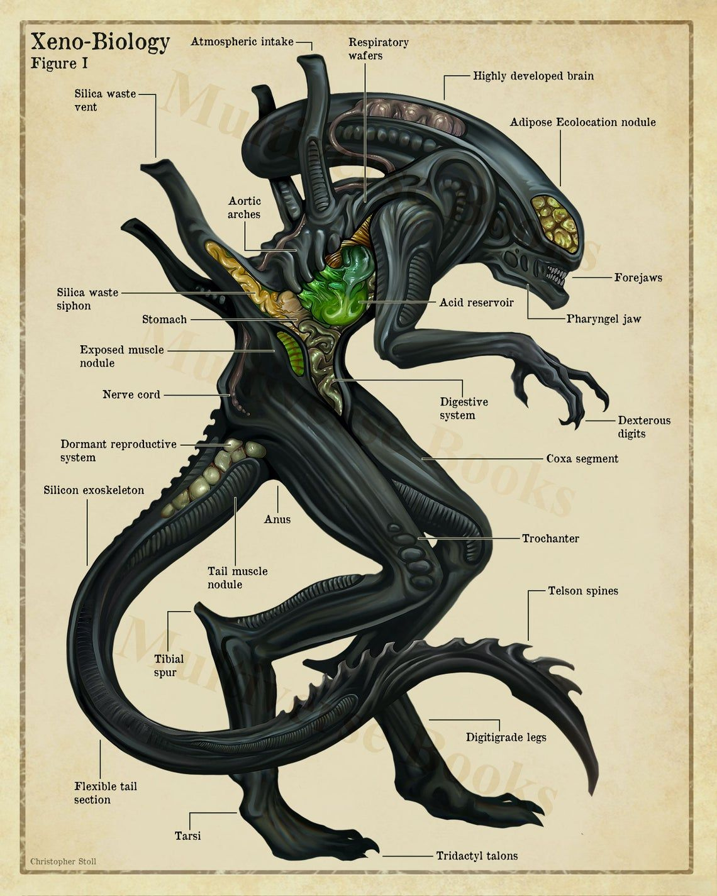
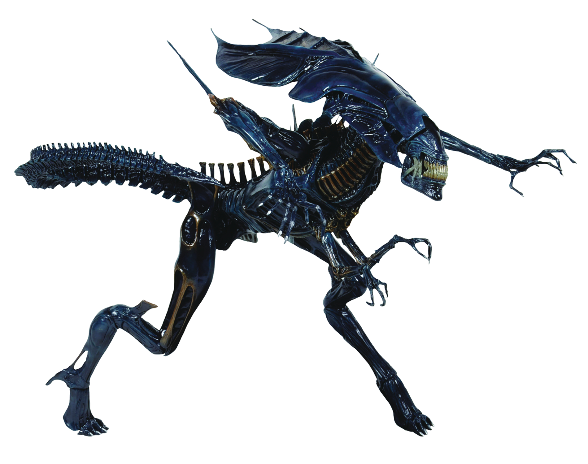
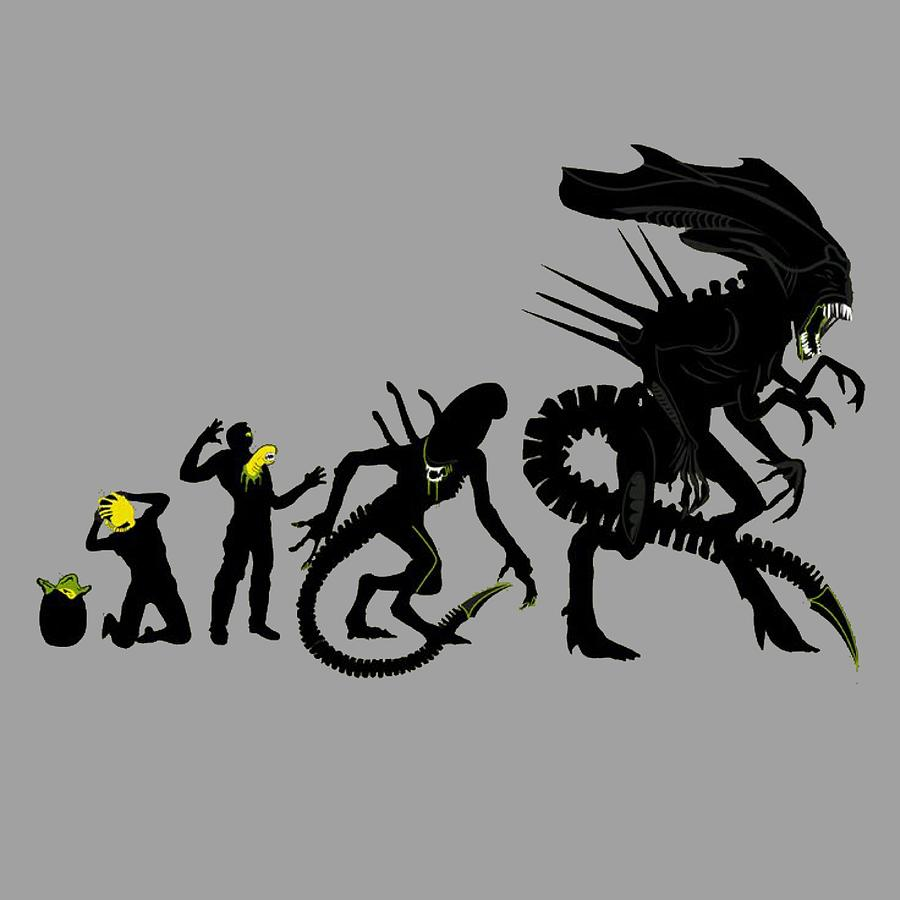
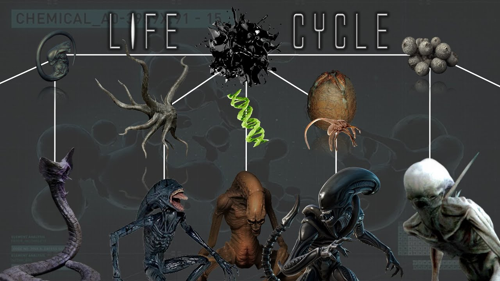
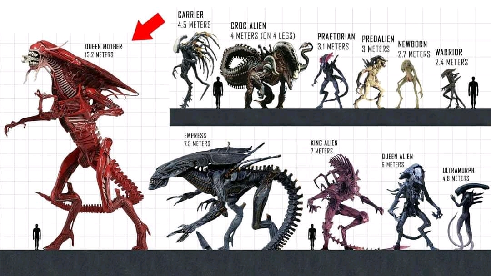
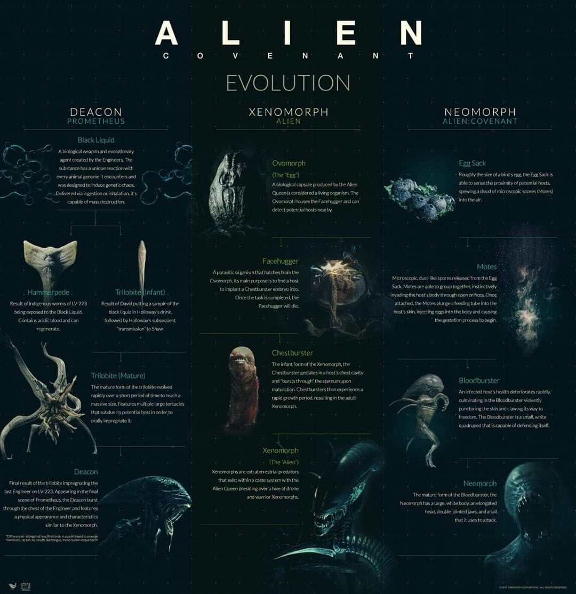

Aliens, often referred to as extraterrestrials, are diverse in appearance but share some common traits that make them distinctly non-human:
Body Struture: Aliens vary widely in body structure, ranging from humanoid forms to entirely different anatomy. They may be large and muscular or small and fragile, depending on their species.
Skin: Their skin can be smooth, rough, or covered in scales. Colors and textures vary significantly, including hues from green to gray to translucent.
Face: Facial features are diverse; some may have multiple eyes, antennae, or no visible face at all. They often possess features adapted to their environment and needs.
Eyes: Eye structures can vary from simple eyespots to complex multi-faceted eyes. Colors and shapes are often adapted to their home planet's light conditions.
Limbs: Depending on the species, they may have multiple limbs, tentacles, or wings. Their limbs are often adapted to their environment and means of locomotion.
Armor: Some alien species develop natural or artificial armor for protection, which can be biological, like hardened skin, or technological, like advanced exoskeletons.
Culture and Social Structure
Society: Alien societies range from highly structured civilizations with complex hierarchies to more fluid and egalitarian groups. Their social structures are often influenced by their evolutionary history and environmental needs.
Technology: Advanced technology is common among many alien species, including space travel, weaponry, and communication systems far beyond human capabilities.
Traditions: Aliens may have unique rituals and traditions, often tied to their planet’s history or their species' evolution. These can include rites of passage, communal gatherings, and religious ceremonies.
History and Background
Origins: Many alien species have ancient origins, with histories that stretch back eons. Their evolutionary paths often diverge significantly from human history.
Interstellar Relations: Aliens may have a history of interaction with other species, including trade, conflict, or alliances. Their relationships with humans can vary from peaceful cooperation to hostile encounters.
Exploration: Some alien species are known for their exploratory nature, seeking to understand or conquer new worlds, which sometimes leads them to Earth.
Weapons and Technology
Weaponry: Alien weaponry can be highly advanced, including energy weapons, plasma-based guns, or biological weapons. Their technology often far exceeds human capabilities.
Defense Systems: Advanced defense mechanisms such as energy shields, cloaking devices, or self-repairing materials are common among technologically advanced alien species.
Transportation: Aliens often use highly advanced spacecraft for interstellar travel, capable of faster-than-light travel or stealth operations.
Behavior and Motivation
Survival Instinct: The primary motivation for many alien species is survival, whether through exploration, colonization, or resource acquisition.
Cultural Values: Alien cultures may place high importance on values such as honor, knowledge, or power, which drive their actions and interactions with other species.
Interaction with Humans: Depending on their goals and values, aliens may interact with humans in various ways, from diplomatic relations to hostile engagements.






Female Aliens Overview
Physical Characteristics
Female aliens can exhibit unique characteristics that distinguish them from their male counterparts:
Size and Strength: Females of some species may be larger or stronger than males, offering advantages in various roles.
Armor and Weaponry: Females often have specialized armor and weaponry, which can be more ornate or suited to their roles in the species.
Cultural and Social Role
Female aliens may play critical roles in their societies, including leadership and reproduction:
Leadership: In many species, females hold significant leadership positions and are crucial in maintaining social order.
Mating and Reproduction: Their reproductive strategies can be complex and highly evolved to ensure the survival of their species.
Notable Appearances
Female aliens have appeared in various media and literature:
Books and Films: Notable examples include characters from science fiction literature and movies, showcasing the diversity of alien species.
Behavior and Personality
Female aliens often adhere to strict codes of conduct and exhibit unique personality traits:
Honor and Tradition: They may follow strict cultural codes, maintaining their species' traditions and values.
Leadership and Intelligence: Many females are highly intelligent and take on leadership roles or strategic positions within their species.